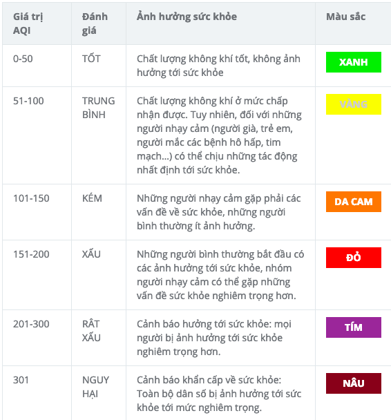
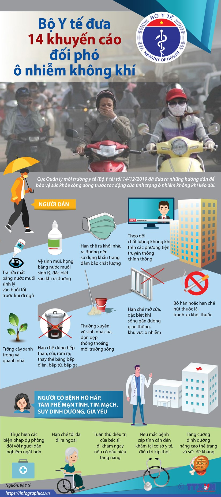

<div class="container-fluid">
    <div class="row d-flex justify-content-center">
        <div class="col-12 col-md-5 py-2 px-4 shadow-sm">
            
            
            <div>

                <h2 class="py-2">Mức độ ô nhiễm không khí ở xa các thành phố lớn là bao nhiêu?</h2>
                <p>Khi các thành phố trở nên công nghiệp hóa, không còn chỗ cho các đơn vị sản xuất thủ công thủ công nên họ được chuyển đến các làng nhỏ hơn ở các vùng nông thôn. Hiện có gần 1500 làng nghề này tạo ra hơn 30% việc làm ở các vùng nông thôn
                    này. Các hoạt động có thể bao gồm sản xuất kẹo hoặc kẹo và chế biến thực phẩm nói chung thường bao gồm sấy khô. Thiết bị gia dụng được lắp ráp và vật liệu xây dựng được sản xuất. Việc nhuộm vải và tái chế vải thường được thực hiện
                    ở những vùng nông thôn này. Phần lớn thiết bị được sử dụng ở những ngôi làng này thường rất cũ và kém hiệu quả. Các cơ sở sản xuất thường được lắp đặt bên trong nhà của người dân và do đó rất khó kiểm soát. Việc sản xuất gạch thường
                    được thực hiện với quy mô tương đối nhỏ bởi các gia đình địa phương đã làm gạch từ bao đời nay. Các chất ô nhiễm không khí được tìm thấy xung quanh những ngôi làng này bao gồm bụi, carbon dioxide, sulfur dioxide và nitric oxide. Carbon
                    đen cũng có thể được tìm thấy ở mức báo động. Điều này chủ yếu xuất phát từ việc đốt nhiên liệu sinh học cho bếp nấu ăn, đốt củi trong nước và đốt vật liệu hữu cơ.
                </p>
                <h2 class="py-2">Dự báo chất lượng không khí của Việt Nam là gì?</h2>
                <p>
                    Gần đây đã có sự gia tăng về số lượng các cảm biến phi chính phủ đặt tại và xung quanh Thành phố Hồ Chí Minh để người dân có thể tự theo dõi chất lượng không khí. Chi phí của những màn hình này thấp hơn 300 đô la so với 1000 đô la chi phí để lắp đặt một
                    trạm thông thường của chính phủ. Điều này khuyến khích người dân tiếp cận với các số liệu, từ đó giúp họ hiểu rõ hơn về tình hình. Một khi mọi người nhận thức được chính xác những gì họ đang hít vào và ảnh hưởng của nó đối với sức
                    khỏe của họ, thì khả năng họ làm điều gì đó với nó càng cao. Vào tháng 9 năm 2019, một số người dân ở Thành phố Hồ Chí Minh đã tổ chức một cuộc tuần hành ôn hòa như một cách nói chung để nâng cao nhận thức về tình hình.
                    <br> Cuộc tuần hành này là động cơ có thể khuyến khích chính quyền địa phương công bố đề xuất thành lập 9 trạm giám sát chất lượng không khí và bổ sung một trạm di động. Họ cũng cho biết ý định thiết lập thêm 11 trạm giám sát vào năm
                    2030. Với sự ra đời của công nghệ mới nhất, họ có ý định gửi cảnh báo đến điện thoại của cư dân khi mức độ đạt đến mức nguy hiểm.
                    <br> Phần lớn thông tin này có thể được tìm thấy trên trang web này, một trang web nổi tiếng được biết đến về độ chính xác của thông tin.
                </p>
                <h2 class="py-2">Tương lai có gì liên quan đến chất lượng không khí ở Việt Nam?</h2>
                <p> Khi mức chất lượng không khí đạt đến mức được xếp vào nhóm không lành mạnh đối với Nhóm nhạy cảm, khuyến cáo người dân nơi có khẩu trang chất lượng khi ra ngoài trời và đóng cửa sổ để tránh hút không khí bẩn từ bên ngoài vào. Họ cũng nên
                    đầu tư vào một máy lọc không khí nếu mức độ vẫn cao trong thời gian dài hơn và giảm thời gian ở bên ngoài.
                    <br> Cư dân được khuyến khích “đi chung xe” nếu có thể và sử dụng các phương tiện giao thông công cộng sẵn có như một cách để giảm lượng khí thải độc hại. Việc sử dụng nhiên liệu xanh hơn cũng được khuyến khích bất cứ khi nào có thể.</p>

            </div>

        </div>
        <div class="col-12 col-md-6 py-2 px-4 shadow-lg">
            <h2 class="py-2">Tình trạng ô nhiễm không khí ở Việt Nam tồi tệ như thế nào?</h2>
            <p>

            </p>
            Việt Nam đang phải hứng chịu một số tình trạng ô nhiễm không khí tồi tệ nhất được ghi nhận. Từ năm 2017 đến năm 2018, nồng độ trung bình hàng năm của PM2.5 (vật chất hạt mịn) tại Thành phố Hồ Chí Minh đã tăng từ 23,6 lên 26,9 microgam trên mét khối (µg
            / m³). Trong khi đó, Hà Nội, thủ đô ở phía Bắc, được xếp hạng trong số 15 thành phố ô nhiễm nhất ở Đông Nam Á, theo Báo cáo Chất lượng Không khí Thế giới IQAir AirVisual 2019, với con số AQI của Mỹ là 129. Thành phố Hồ Chí Minh là một thành
            phố lớn ở phía nam được xếp hạng là sạch nhất với con số AQI của Hoa Kỳ là 79. Con số AQI trung bình hàng năm của Hoa Kỳ là 97.<br> Một trong những chất ô nhiễm tồi tệ nhất đối với sức khỏe con người là vật chất hạt mịn (PM2.5).
            Có 8 ngày Hà Nội đăng ký số đo thấp hơn mức trung bình cả nước là 50 µg / m 3 (microgam trên mét khối) vào năm 2019. Thành phố Hồ Chí Minh khá hơn một chút khi chỉ có 36 ngày dưới mức trung bình của cả nước. Khi nhìn vào những con số này,
            nó cho thấy rằng trong phần còn lại của năm, hơn 10 triệu người đã tiếp xúc với không khí ô nhiễm này.<br> Những hạt mịn này (PM2.5) đặc biệt có hại cho sức khỏe vì chúng xâm nhập sâu vào bên trong mô phổi và đủ nhỏ để nằm trong các phế nang.
            Đây là những túi nhỏ trong phổi nhận oxy mà bạn hít vào. Nằm ở đáy các ống phế quản, những túi này có kích thước siêu nhỏ nhưng ở người trưởng thành trung bình có kích thước khoảng 480 triệu. Một khi chúng bắt đầu chặn đường thở, các bệnh
            như phổi tắc nghẽn mãn tính, bệnh tim, ung thư phổi và nhiễm trùng đường hô hấp sẽ dễ xảy ra hơn rất nhiều. Những người bị hen suyễn dễ bị tăng các cơn.<br> Nồng độ PM2,5 trung bình cho năm 2019 đối với Hà Nội là 46,9 µg / m 3 trong khi Thành
            phố Hồ Chí Minh ghi nhận con số 25,3 µg / m 3 . Ô nhiễm không khí dường như có liên quan trực tiếp đến GDP của các quốc gia. Các nhà đầu tư nước ngoài ít có khả năng đầu tư vào một quốc gia nơi ô nhiễm không khí là một vấn đề. Năm 2019, GDP
            của nước này đã giảm từ 7,08% xuống 7,02%. Chính phủ Việt Nam hiện đang nghiên cứu việc đưa ra các tiêu chuẩn, quy tắc và quy định về môi trường.<br> Năm 2017, có hơn 70.000 trường hợp tử vong do chất lượng không khí kém, khiến Việt Nam đứng
            thứ 4 trong khu vực. Bộ trưởng Bộ Tài nguyên và Môi trường Việt Nam hiện đang tổ chức một hệ thống giải quyết vấn đề ô nhiễm không khí
            <h2 class="py-2">Những nguyên nhân chính gây ô nhiễm không khí ở Việt Nam là gì?</h2>
            <p>
                Nguyên nhân chính gây ô nhiễm không khí ở Việt Nam là do hệ thống giao thông. Hơn 3,6 triệu ô tô lưu thông trên đường và 58 triệu xe máy. Phần lớn các phương tiện này được tìm thấy ở các thị trấn và thành phố trong cả nước. Hầu hết các loại xe này đều
                đã cũ và do đó không đạt tiêu chuẩn khí thải khuyến nghị. Họ cùng nhau gây ra tắc đường hàng ngày và liên tục thải khói đen vào bầu khí quyển. Những phương tiện này cũng bao gồm xe buýt cũ vẫn được sử dụng và xe tải và xe tải được sử dụng
                bởi các công ty xây dựng.<br> Hệ thống giao thông này càng trở nên trầm trọng hơn bởi sự quy hoạch của mạng lưới đường bộ. Các khu chung cư cao tầng có mặt ở khắp các thành phố lớn của Việt Nam và là nơi chứa hàng nghìn
                người đi làm hàng ngày. Thành phố Hồ Chí Minh đang tiến hành xây dựng hệ thống tàu điện ngầm nhưng hiện tại vẫn chưa có phương tiện giao thông công cộng thực sự hiệu quả.<br> Một nguyên nhân khác gây ô nhiễm không khí ở các thành phố là
                số lượng các công trường xây dựng ngày càng nhiều tạo ra một lượng bụi khổng lồ. Điều này chủ yếu là từ việc phá dỡ tòa nhà hiện tại và bột xi măng được sử dụng để xây dựng tòa nhà mới. Việc tạo ra các không gian mở xanh ở các trung tâm
                thành phố sẽ giúp làm sạch không khí. Các khu công nghiệp cũ đang dần được khuyến khích di dời khỏi trung tâm thành phố và chuyển đến các khu công nghiệp ở ngoại ô. Điều này cũng áp dụng cho các nhà máy điện than, nhà máy sản xuất xi măng
                và nhà máy sản xuất thép. Nhiều bếp nấu sinh khối được hàng trăm nghìn người sống ở các thành phố lớn sử dụng. Ở các vùng nông thôn của đất nước, ô nhiễm không khí là do đốt các chất hữu cơ như rơm rạ và các phế phẩm khác từ ngành nông
                nghiệp. Điều này đặc biệt tồi tệ hơn trong mùa khô từ tháng 10 đến tháng 2<br>
            </p>
            <h2 class="py-2">Có thể làm gì để cải thiện chất lượng không khí ở Việt Nam? </h2>

            Các giải pháp ngắn hạn đã được xác định bởi các nhóm môi trường địa phương, những người khuyến nghị kiểm soát chặt chẽ hơn nhiều đối với khí thải phương tiện. Việc kiểm soát giao thông được cải thiện và việc áp dụng hệ thống quản lý bụi cho các công trường
            xây dựng cũng sẽ giúp ích cho chất lượng không khí ở Việt Nam. Nhìn chung, lệnh cấm sử dụng bếp than sẽ giúp ích rất nhiều nhưng sẽ không được ưa chuộng và khó thực thi. Đây chỉ là những giải pháp ngắn hạn nhưng là một bước đi đúng hướng.
            Về lâu dài, phải có các nguồn năng lượng sạch, bền vững.
            <br> Việc cải thiện và củng cố nghiêm ngặt quy hoạch đô thị sẽ làm giảm đáng kể ô nhiễm không khí. Hai thành phố lớn Hà Nội và Thành phố Hồ Chí Minh có rất nhiều cơ sở chính phủ đông dân cư, các bệnh viện và trường đại học có thể được di dời
            ra ngoại thành, do đó cần tạo ra nhiều không gian xanh mở. Việc di dời Nhà máy Bóng đèn Rạng Đăng sẽ giảm thiểu đáng kể các chất ô nhiễm không khí nguy hiểm. Một quy tắc thực hành xây dựng mới cần được đưa ra cũng như phát triển các tòa nhà
            năng lượng sạch và sử dụng năng lượng mặt trời.<br> Thành phố Hồ Chí Minh đã có một hệ thống tàu điện ngầm đang được xây dựng, điều này cuối cùng sẽ rất thuận lợi trong việc giảm lượng phương tiện cá nhân trên các tuyến đường. Việc loại bỏ
            dần các loại xe buýt và xe tải cũ gây ô nhiễm không khí cần được khuyến khích bởi các khoản trợ cấp của chính phủ. Các chính sách có thể được đưa ra để khuyến khích sử dụng xe điện (EV) và khuyến khích việc sử dụng chúng ở các trung tâm thành
            phố. Với sự ra đời của công nghệ hiện đại, sự ra đời của các phương tiện chạy bằng năng lượng xanh không còn là chủ đề của khoa học viễn tưởng. Cả thế giới đều thấy những lợi thế của xe điện, đặc biệt là khi được sử dụng làm phương tiện giao
            thông trong các thành phố lớn của chúng ta. Nhiều công ty hiện đang nghiên cứu việc phát triển các phương tiện tự hành mà cuối cùng phải là phương thức giao thông đô thị cho tương lai cùng với việc không phát thải.<br> Có nhiều tổ chức ở Việt
            Nam đang tích cực làm việc để cải thiện chất lượng không khí trong nước. Hiệp hội Bảo vệ Tài nguyên và Môi trường Việt Nam (VACNE) đã thành lập Hiệp hội Đối tác Không khí Sạch Việt Nam (VCAP).
            <br> Một thành viên của Tổ chức Đối tác Không khí Sạch Việt Nam (VCAP), đã khuyến nghị giám sát chặt chẽ các doanh nghiệp thải ra khối lượng lớn chất ô nhiễm. Ông cũng khuyến nghị giới hạn số lượng xe máy đi vào trung tâm thành phố trong các
            giờ cao điểm chính.
            <br> Chính vì những hậu quả tiêu cực của ô nhiễm không khí, đã có nhiều tổ chức trên thế giới đang sát cánh cùng Việt Nam giải quyết vấn đề này. Chính phủ Việt Nam đang trong quá trình đưa ra các chính sách nhằm giảm lượng khí thải từ xe cộ
            và công nghiệp cũng như phát triển năng lượng sạch cho hộ gia đình.
            <h2 class="py-2"> Thành phố nào ở Việt Nam có mức độ ô nhiễm không khí cao nhất? </h2>
            <p>
                Mức AQI (Chỉ số Chất lượng Không khí) cao nhất của Hoa Kỳ được ghi nhận từ thủ đô Hà Nội. Con số được ghi nhận là 272 vào ngày 30 tháng 9, vượt quá con số khuyến nghị của Tổ chức Y tế Thế giới là 40 µg / m 3. Thành phố sạch nhất ở phía nam của đất nước,
                Thành phố Hồ Chí Minh với con số AQI là 153. Từ ngày 12 tháng 9 đến ngày 30 tháng 9, mức độ hạt mịn PM2,5 µg / m 3 chủ yếu trên 50 µg / m 3 theo con số trích dẫn của Bộ Tài nguyên và Môi trường. Nồng độ PM2,5 trung bình là 50 µg / m 3
                trong khoảng thời gian 24 giờ và 25 µg / m 3 trong một năm là các tiêu chuẩn mà cơ quan này phấn đấu. Khuyến nghị của WHO (Tổ chức Y tế Thế giới) lần lượt là 25 và 10. Trong khoảng thời gian 19 ngày này, chỉ có 5 ngày khi mức đủ thấp để
                được coi là “an toàn”. Đối với những ngày còn lại, chúng tôi khuyên bạn nên đeo khẩu trang chống ô nhiễm không khí khi ra ngoài nhà.
                <br> Chất lượng không khí đặc biệt tồi tệ vào thời điểm này trong năm vì đây là thời điểm chuyển giao giữa mùa ẩm và mùa khô. Năm nay, các vấn đề trở nên tồi tệ hơn do lượng mưa bất thường vào tháng 9 thường giúp làm sạch không khí.
                <br> của các hạt mịn này. Các nhóm người dễ bị tổn thương bao gồm người già, trẻ em, phụ nữ có thai và những người bị rối loạn hô hấp được khuyến cáo không nên rời khỏi nhà trừ khi thực sự cần thiết và nếu không thể tránh khỏi thì phải
                đeo khẩu trang và kính bảo vệ mắt để giảm phơi nhiễm.
                <br> Điều này càng trở nên trầm trọng hơn do sự phân tán bức xạ nhiệt từ mặt đất lên khí quyển, do đó, góp phần hình thành sương mù ở mức độ tương đối thấp. Việc đốt trấu, rơm rạ ở ngoại ô thành phố cũng là một nguyên nhân góp phần làm
                ô nhiễm không khí ở mức cao đáng báo động.
                <br> Họ tìm đến Bắc Kinh để tìm nguồn cảm hứng, nơi vốn nổi tiếng với chất lượng không khí cực kỳ kém. Phải mất nhiều năm và nỗ lực phối hợp để cải thiện chất lượng không khí ở đó, nhưng nó đã chứng minh rằng điều đó có thể làm được.
                <br>
            </p>
        </div>
    </div>
</div>